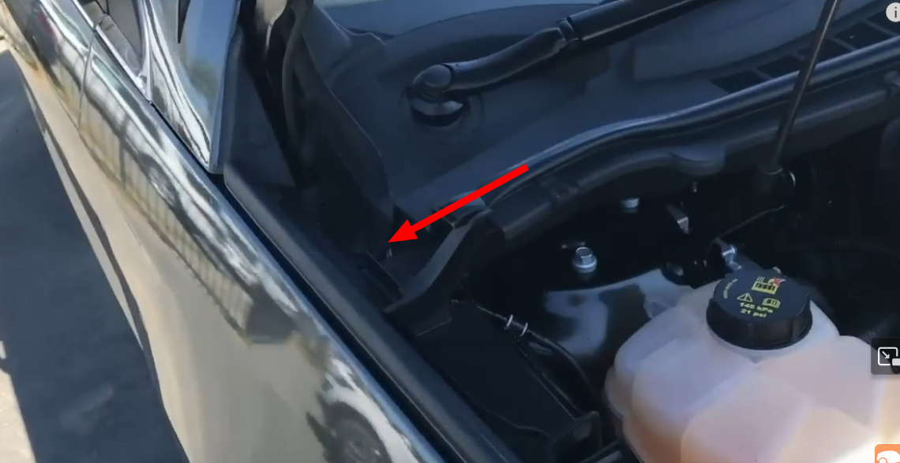
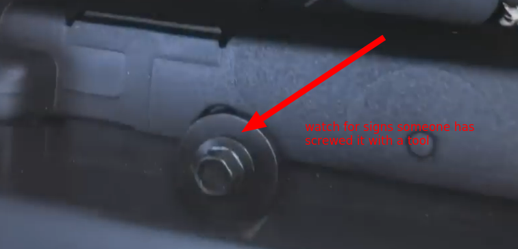

Ideally you want to buy a car that has done its kms on the highway instead of in the city. This is because the constant breaking and accelerating from city driving can damage the car.
To verify that a car has done its kms on the highway you can:
If you can't see any, ask if the car has ever been painted - it could indicate previous accidents. You should walk away if that's the case.
Check for wear and tear on the brake pedal. It could indicate that the vehicle has been through many stop-and-go situations. If it is too worn, walk away.
Similarly to the brake pedal, wear and tear on the seat belt can indicate many stop-and-go situations.
Regular oil changes must have been done every 8,000 km.
The "sweet spot" (depreciation vs cost of repair) of a car is usually within the range of ~40,000 km and ~150,000 km.
From the front of the car, look down the side panels for any sign of uniformity on the texture or paint.
See where the door components connect to the side of the car for any sign of extra spray paint.
Run your finger on the edge of the bonnet onto the door of the side panels to feel any change of texture that could indicate a paint job.
Check if the fender flare bolt is a bit wasted, this means that some serious repair has taken place:
 
Check that the tear on the front wheels are uniform, and do the same for the back wheels. That may indicate some alignment problem.
Tyres age and become harder, leading to cracks. Look for age stamps (e.g., '2319' for the 23rd week of 2019) and consider replacing tires older than 3-4 years